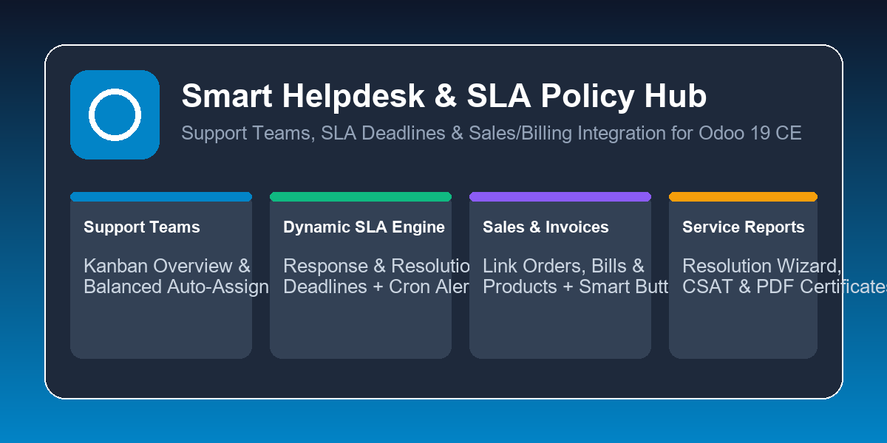
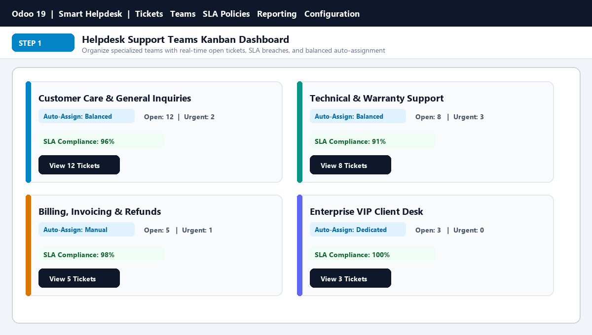
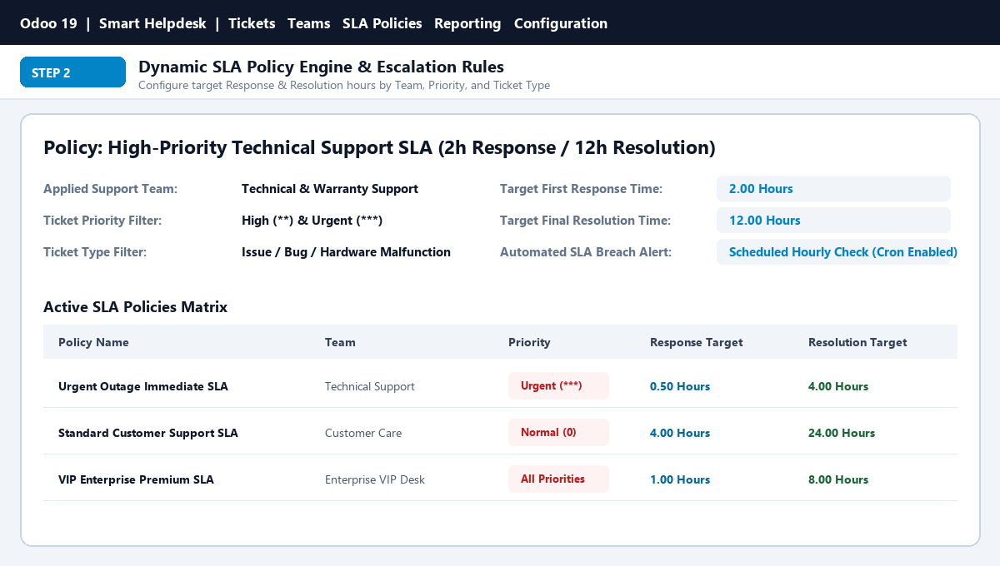
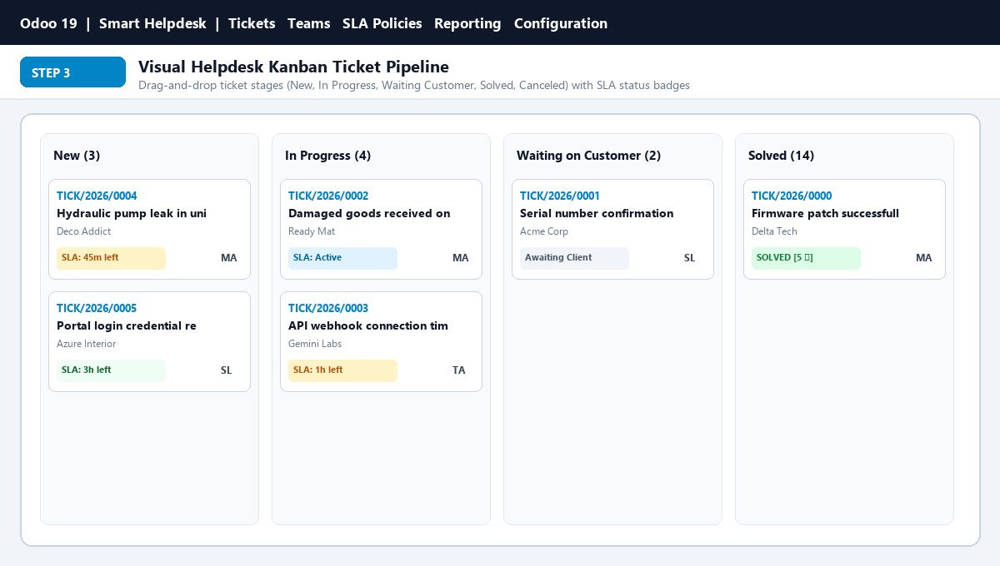
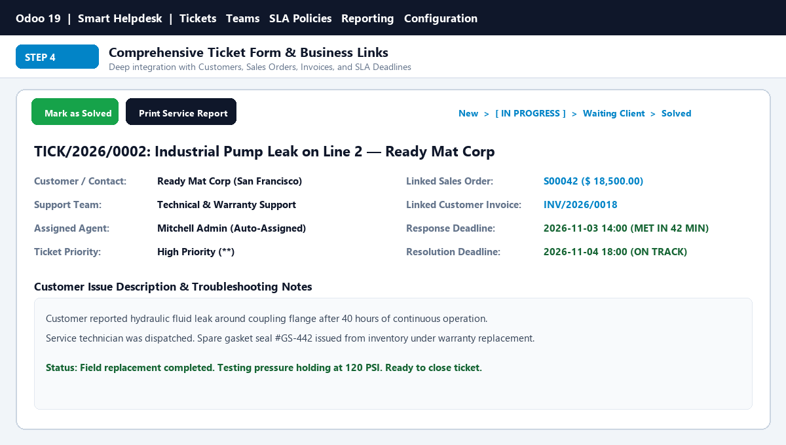
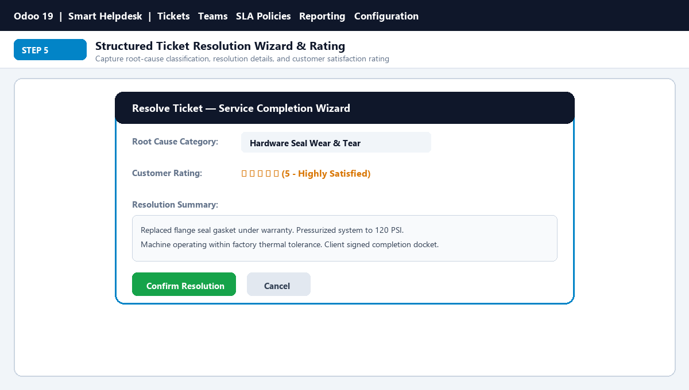
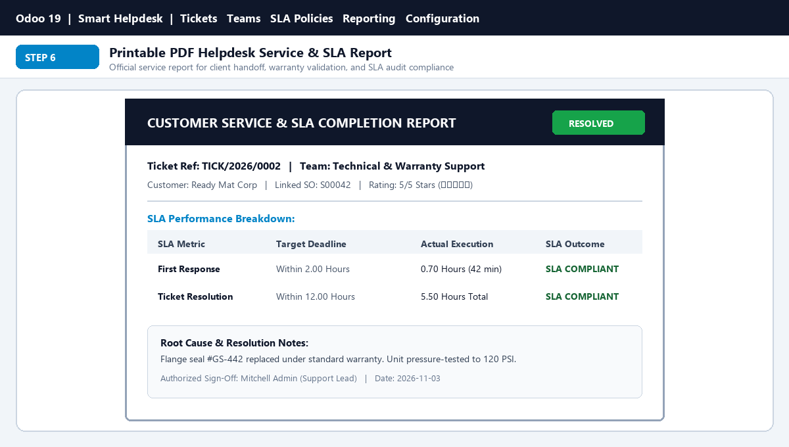

ODOO 18.0 COMMUNITY • ENTERPRISE-GRADE HELPDESK & SLA ENGINE
Standard Odoo 18 Community Edition has no Helpdesk app (Enterprise-only). This app brings a complete, professional customer service desk to Community: organize Support Teams, enforce Dynamic SLA Deadlines, auto-assign agents with balanced workload distribution, link Sales Orders & Invoices, and print official PDF Service Reports.
Dynamic SLA Policies
Target Response & Resolution hours computed automatically by Team and Priority.
Balanced Auto-Assignment
Automatically routes new tickets to the team member with the lowest open workload.
Sales & Invoice Links
Link tickets directly to Customers, Orders and Invoices with 1-click smart buttons.
PDF Service Reports
Print auditor-ready service reports with SLA performance, root-cause and client sign-off.
COMPLETE CUSTOMER SUPPORT ECOSYSTEM
1. Support Teams Dashboard
Organize teams (Customer Care, Tech Support, Billing) with live metric cards.
2. Dynamic SLA Policy Engine
Automated response & resolution countdowns with hourly breach alerts.
3. Kanban Pipeline
Track tickets through New, In Progress, Waiting Customer, and Solved stages.
4. Resolution Wizard & 5-Star Rating
Record root cause category, resolution notes, and customer rating on completion.
5. Sales & Accounting Smart Buttons
View all support tickets directly from the Customer form and Sales Order screen.
THE WORKFLOW AT A GLANCE
Every customer support ticket follows a clear, accountable 5-stage lifecycle from submission to verified resolution:
STEP 1 • Ticket Creation
Customer logs an inquiry or agent creates a ticket linking customer and priority.
STEP 2 • Auto-Assign & SLA
Assigned to least-busy agent; SLA response and resolution countdowns start.
STEP 3 • Business Linking
Agent links the relevant Sales Order or Invoice and collaborates via Chatter.
STEP 4 • Resolution Wizard
Agent clicks Mark as Solved; popup captures root cause and customer rating.
STEP 5 • PDF Service Report
Generate official PDF Service Report with SLA outcome and client sign-off.
COMPLETE VISUAL PRODUCT TOUR
Every screen below ships ready to use out of the box with smart_helpdesk_sla_hub.
SCREEN 1 OF 6
Go to Smart Helpdesk → Support Teams. Organize agents into specialized teams (Customer Care, Technical Support, Billing & Invoicing). Each team card gives manager visibility into open tickets, urgent issues, SLA compliance % and automated workload assignment mode.

SCREEN 2 OF 6
Go to Smart Helpdesk → Configuration → SLA Policies. Configure target First Response and Resolution hours based on Support Team, Priority, and Ticket Type. An automated hourly background job evaluates active tickets and triggers breach alerts.

SCREEN 3 OF 6
Go to Smart Helpdesk → Tickets → All Tickets. Drag-and-drop tickets across custom stages (New, In Progress, Waiting Customer, Solved, Canceled). Visual badges show priority, assigned agent avatar, and remaining SLA time.

SCREEN 4 OF 6
Agents can link tickets directly to the customer’s Sales Order, Invoice, or Product. Real-time SLA indicators display exact deadlines and whether the first response target was achieved.

SCREEN 5 OF 6
Clicking Mark as Solved opens a dedicated resolution wizard to record root-cause classification, action taken, and 1–5 Star customer satisfaction rating for SLA audit reporting.

SCREEN 6 OF 6
Generate an official Customer Service & SLA Report containing ticket reference, linked Sales Order, SLA response/resolution timings, root cause diagnosis, and authorized sign-off.

| Feature / Capability | Standard Odoo 18 Community | Smart Helpdesk & SLA Hub |
|---|---|---|
| Helpdesk Tickets & Support Teams | ✖ Not Available (Enterprise-Only) | ✔ Included Out of the Box |
| Dynamic Response & Resolution SLA Engine | ✖ Not Available | ✔ Configurable by Priority & Team |
| Least-Loaded Balanced Agent Auto-Assignment | ✖ Not Available | ✔ Workload Balanced Distribution |
| Sales Order & Customer Form Smart Buttons | ✖ Not Available | ✔ 1-Click Ticket Navigation |
| Resolution Popup & PDF Service Report | ✖ Not Available | ✔ Root-Cause Notes & PDF Report |
SUPPORT • LIVE DEMO • CUSTOMIZATION
Tell us about your support workflow and we will tailor the module to fit. Include your name, company, Odoo version, inquiry type (Support / Demo / Customization) and your requirements.
Or write to us directly: bhargavipasham2000@gmail.com